Zoubida BENHABIB
Étudiante en Informatique
À propos de moi
Je suis Zoubida BENHABIB, étudiante en deuxième année d'informatique à l'IUT de Villetaneuse Sorbonne Paris Nord. Passionnée par le développement logiciel et la cybersécurité, j'aime apprendre en résolvant des problèmes concrets et découvrir de nouvelles technologies. Je souhaite donc pour la suite m'orienter vers ces domaines là.
En dehors des cours, je prends part à des projets personnels, j'explore les bases de la cybersécurité et je développe mes competences en programmation. Mais pas seulement, pour pouvoir garder la motivation tout au long de mon cursus, je m'attaque aussi à des projets personnels. Souvent des jeux dans lesquels je peux aussi allier une autre passion, le dessin.
Je suis de nature curieuse et aime toucher à tout. Je lance plusieurs projets en même temps, non pas seulement des projets informatiques, mais aussi personnels. Comme dit plus haut j'allie le dessin, le sport mais aussi parfois le montage vidéo, car ce que j'apprécie le plus c'est de donner vie à mes créations et de voir des résultats concrets.
Mon parcours
La logique de mon parcours
Je n'ai jamais considéré ma première année de double licence Biologie-Informatique comme une perte de temps ou un retard par rapport aux autres, grâce à cette année j'ai pu découvrir mon attrait pour l'informatique et vraiment vouloir m'orienter seulement dedans. C'est pourquoi j'ai intégré la première année d'un BUT, attirée par leur dimension pratique plutôt que théorique, je m'y suis naturellement orienté. Mon stage de BUT2 a confirmé cette orientation : il m'a permis de découvrir le métier de l'intérieur et d'affiner mes choix pour la suite de mon cursus.
Mon projet professionnel
Je m'oriente vers le développement logiciel et la cybersécurité, deux domaines où je peux conjuguer rigueur, résolution de problèmes et créativité. Mon stage m'a montré que ce qui me motive le plus, c'est de construire des outils concrets qui répondent à un vrai besoin (suivi bancaire automatisé, site vitrine, automatisation WhatsApp). À court terme, je cherche un stage ou une alternance de BUT 3 en développement ; à plus long terme, j'aimerais exercer un métier mêlant conception d'applications et sécurité des systèmes.
Mes qualités personnelles
- Curiosité & autonomie — illustrées par mes projets personnels (jeux, dessin, montage vidéo) menés en parallèle des cours.
- Persévérance — démontrée lors des SAE (projets universitaire) où j'ai dû résoudre des problèmes complexes (ex. jeu d'échecs en Java).
- Travail d'équipe — mise en pratique sur les projets de groupe (ex. site vitrine S2.06).
Mon évolution : du BUT 1 au BUT 2
Entre 2024 et 2026, je suis passée de l'acquisition des bases (algorithmique, premières SAE) à une véritable mise en situation professionnelle. En BUT 2, le projet Mnémosyne m'a fait monter en compétences sur le développement back-end (PHP, base de données, architecture MVC) et le travail en équipe sur un dépôt Git partagé, et mon stage m'a apporté de la méthode (découpage des tâches, suivi sur Trello, tests unitaires) ainsi que de l'autonomie face à des technologies inconnues. Mes points forts identifiés : la résolution de problèmes et la capacité à apprendre vite. Ces acquis constituent une base solide pour aborder le BUT 3.
Langues
- Français Langue maternelle
- Anglais niveau B2/C1
- Arabe Bilingue
Centres d'intérêt
En dehors de l'informatique, j'aime les activités créatives et manuelles : elles nourrissent ma curiosité et m'apportent la même satisfaction que le code, celle de voir un résultat concret prendre forme.
Bilan de compétences
Synthèse de mes acquis issus des SAE du BUT Informatique et de mon stage. Plutôt que de présenter une liste de compétences seulement, chaque niveau ci-dessous s'appuie sur les projets concrets qui en sont la preuve (qu'on peut voir plus bas) : Python sur les SAE d'analyse de réseaux d'amis et l'exercice d'API Pokémon, Java sur le jeu d'échecs, SQL / bases de données sur le site e-commerce et le projet Mnémosyne, HTML / CSS / JavaScript sur les sites vitrines et le site de l'association, et Git, Linux et le travail d'équipe tout au long du cursus et en entreprise.
Langages de programmation
Développement Web
Systèmes & Outils
Soft Skills
Synthèse de mes projets BUT 2
Pour chaque projet, voici les objectifs, mes tâches individuelles, les compétences acquises, les preuves associées et les pistes d'amélioration.
Projet S3 — Mnémosyne (conception)
| Objectifs | Concevoir une application web pour l'IUT permettant de visualiser et suivre la progression des étudiants dans les parcours du BUT (BUT1 → BUT2 → BUT3 → diplômés) et d'analyser la validation des compétences. |
|---|---|
| Tâches principales (individuelles) | Partie back-end : conception du schéma de la base de données, écriture des modèles d'accès aux données en PHP (PDO) et des requêtes SQL, mise en place de l'architecture MVC. |
| Tâches secondaires | Import des données ScoDoc, tests des requêtes, rédaction de la documentation technique et intégration avec le travail des autres membres du groupe. |
| Compétences techniques | Modélisation de données relationnelles, PHP / PDO, SQL (MySQL/MariaDB), architecture MVC, requêtes préparées contre les injections SQL. |
| Compétences transversales | Travail d'équipe sur un dépôt Git partagé, organisation et découpage des tâches, communication entre les pôles back-end et front-end. |
| Preuves de compétences | Dépôt GitHub du projet (code back-end, schéma mnemosyne-projet_bdd.sql), application fonctionnelle de suivi de cohortes. |
| Pistes d'amélioration | Mieux structurer les requêtes dès le départ et anticiper la sécurité (CSRF, hachage) plutôt que de la rajouter en S4. |
Projet S4 — Mnémosyne (amélioration)
| Objectifs | Reprendre et améliorer l'application Mnémosyne du S3 : enrichir les visualisations, fiabiliser l'import des données et renforcer la sécurité de l'administration. |
|---|---|
| Tâches principales (individuelles) | Import et normalisation des fichiers ScoDoc (correction automatique des variantes de noms), exports PDF/JSON, participation à la mise en place de la protection CSRF et du hachage des mots de passe. |
| Tâches secondaires | Développement des API JSON les diagrammes de Sankey et l'analyse de compétences (séparation « sans dette » / « en dette »), optimisation des requêtes SQL et de l'accès aux données. |
| Compétences techniques | Conception d'API JSON, optimisation SQL, sécurité applicative (CSRF, bcrypt, régénération de session), filtrage avancé des données (par formation, promotion, statut). |
| Compétences transversales | Reprise d'une base de code existante, autonomie, esprit critique sur les choix techniques, restitution claire des résultats via les visualisations. |
| Preuves de compétences | Dépôt GitHub SAE-S4-Mnemosyne/mnemosyne-saturne3 : diagrammes de Sankey, filtres, exports PDF/JSON et import sécurisé ScoDoc. |
| Pistes d'amélioration | Mettre en place des tests automatisés et passer une partie du back-end vers un framework pour faciliter la maintenance. |
Perspectives de progression
Points que je souhaite consolider d'ici la fin du BUT : approfondir le développement (frameworks back-end, tests automatisés que j'ai découverts en stage), renforcer mes bases en cybersécurité, et gagner en aisance sur l'intégration d'API externes. Cela guidera mes choix de projets et mon stage de BUT 3.
Mes projets
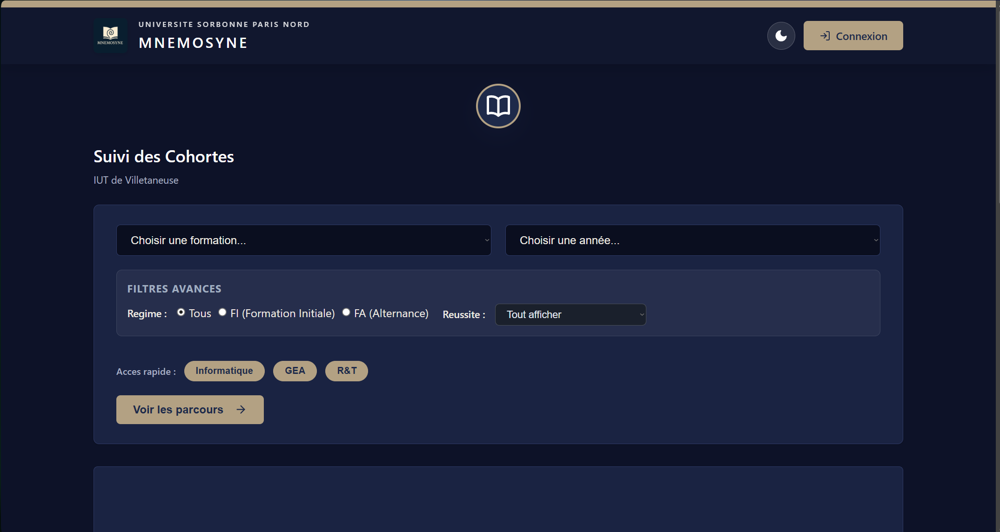
S3 / S4 - Mnémosyne (suivi de cohortes)
Application web de visualisation et de suivi de la progression des étudiants dans les parcours du BUT, développée en équipe puis améliorée en S4.
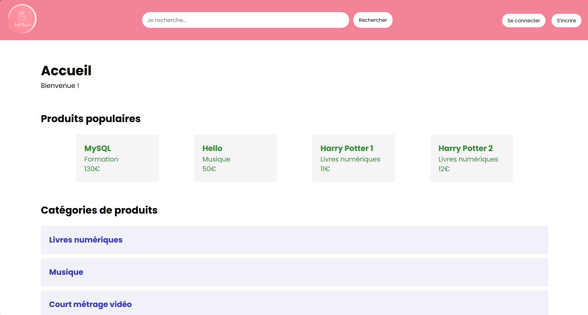
Site e-commerce
Développement complet d’un site de vente e-commerce fictif, dynamique permettant la gestion de produits, d’utilisateurs et de commandes.
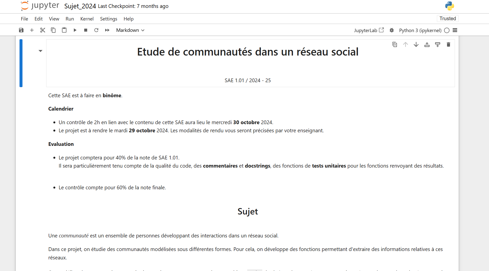
S1.01 - Réseau d'amis
Analyse de graphes représentant un réseau d'amis, avec exploration de relations et suggestions d'amis.
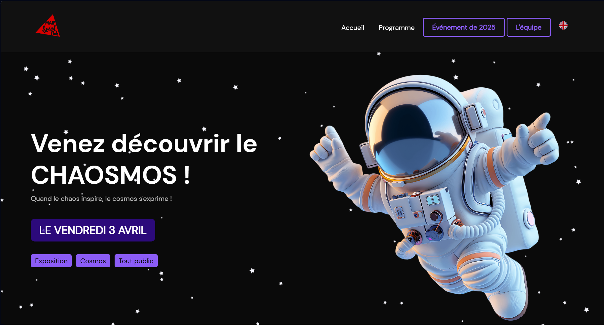
S2.06 - Travail d’équipe (Site vitrine)
Conception d’un site web vitrine en équipe pour promouvoir un événement fictif.
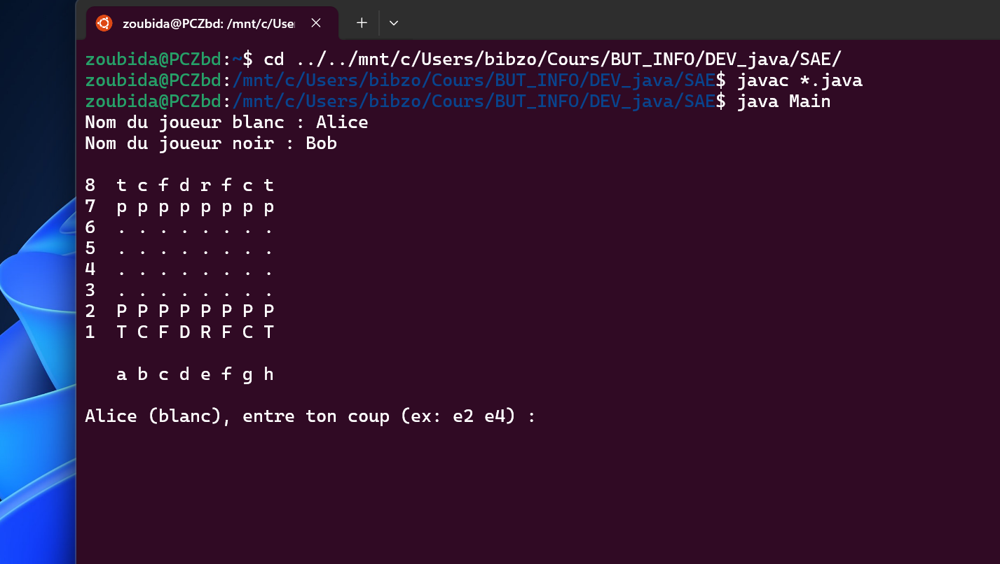
S2.01 - Jeu d’échecs sur terminal
Développement d’un jeu d’échecs en interface terminale avec règles, déplacements et logique de partie.
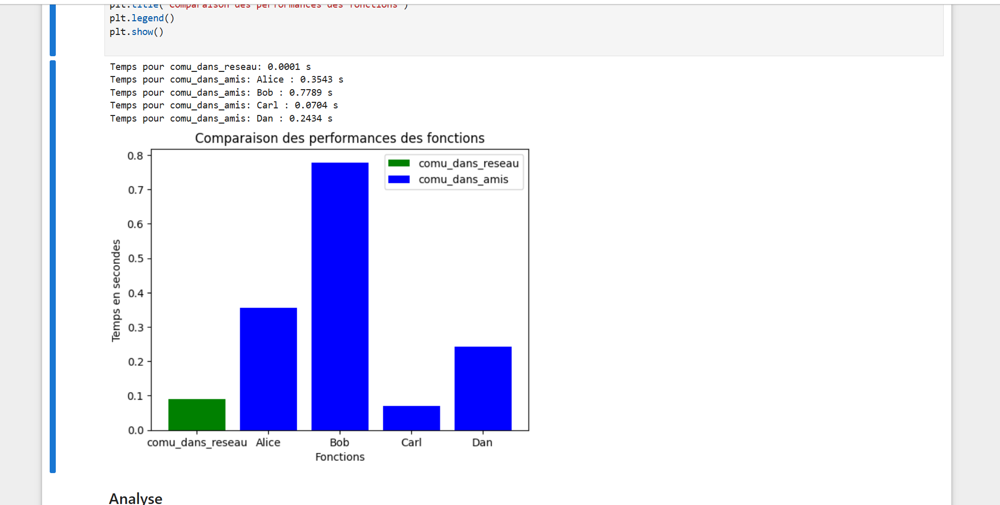
S1.02 - Comparaison d’algorithmes
Étude comparative de plusieurs algorithmes appliqués au réseau d’amis, avec visualisations de leurs performances.
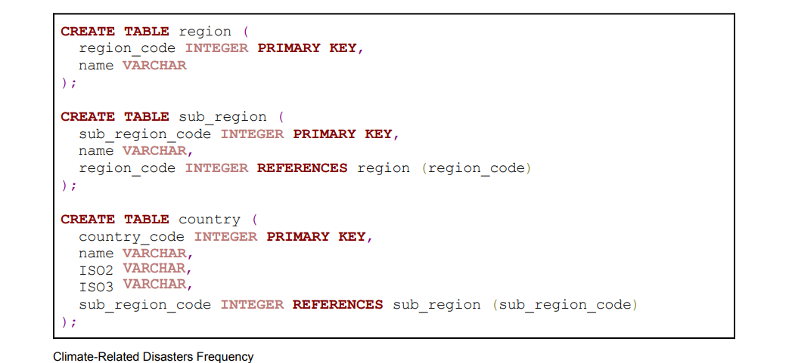
S1.04 - Création d’une base de données
Conception et implémentation complète d’une base de données relationnelle (MCD, MLD, requêtes SQL).
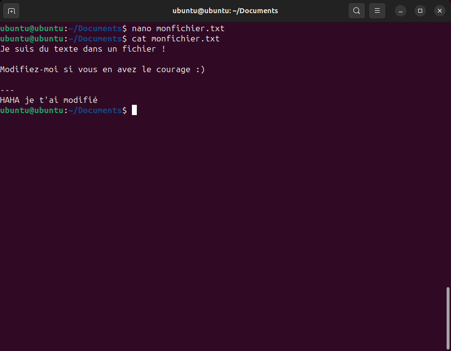
S1.03 - Installation de poste Linux
Installation et configuration d’un poste de travail sous Linux.
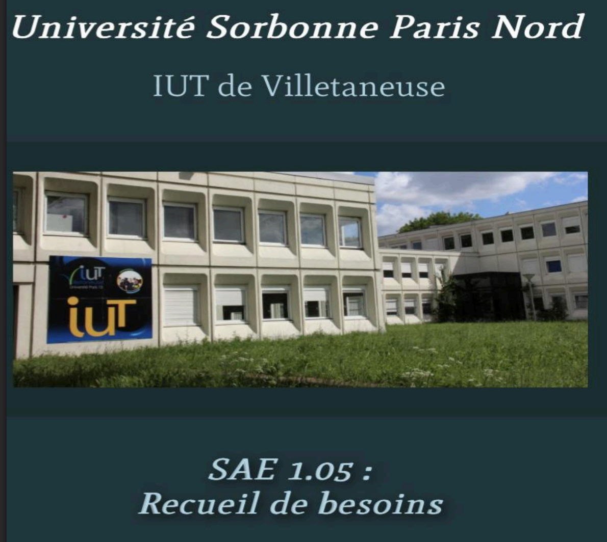
S1.05 - Recueil de besoins (Améliorations campus)
Enquête terrain auprès des étudiants pour identifier des pistes d’amélioration sur le campus.
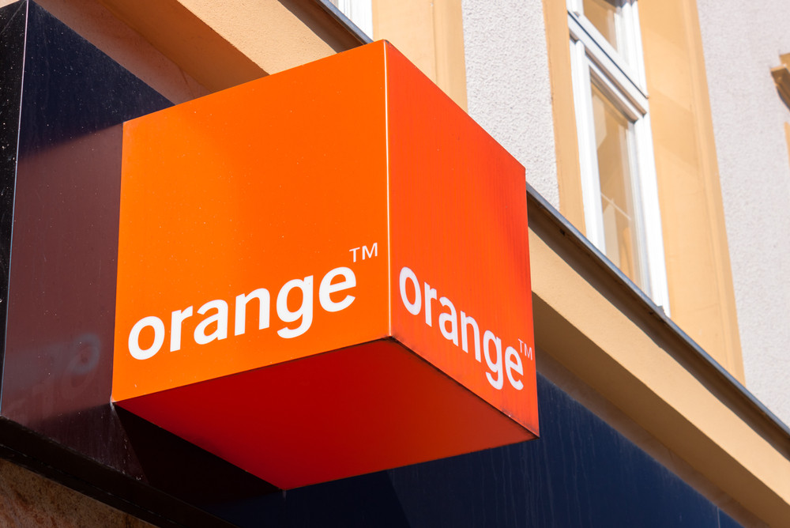
S1.06 - Environnement économique
Rédaction d’un dossier d’analyse sur une entreprise réelle (secteur, environnement, concurrents).
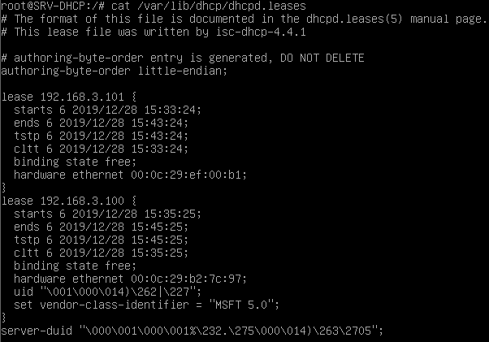
S2.03 - Installation de services réseau
Mise en place de services réseau (serveur web, DHCP…) sur machines Linux.
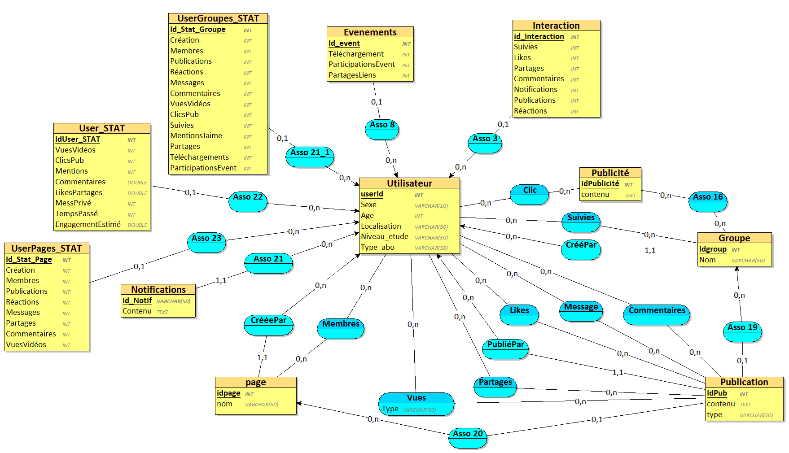
S2.04 - Exploitation d’une base de données
Requêtage avancé, vues, procédures stockées, modélisation et exploitation de données relationnelles.
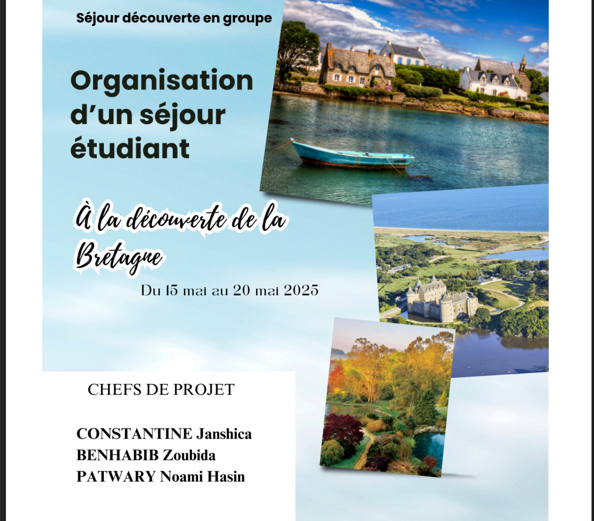
S2.05 - Gestion de projet (Voyage)
Organisation complète d’un voyage de groupe sous contraintes, avec gestion du budget et des ressources.
Vous souhaitez voir plus de projets ou collaborer sur un projet ?
Voir mon GitHubExpériences professionnelles
Mes expériences en dehors des cours : mon stage de BUT 2 chez VifAuto et mon engagement bénévole auprès de l'association Ambition Jeunesse Creilloise, que j'ai rejointe après avoir réalisé leur site web.
Stagiaire développement — VifAuto
VifAuto (SAS) · 26 janv. – 20 mars 2026 · Montataire / Persan (60)
Stage de 8 semaines dans une entreprise de vente de pièces automobiles qui développe aussi ses propres outils numériques. J'y ai mené trois missions de développement (suivi bancaire par open banking, site vitrine, automatisation WhatsApp), en alternant présentiel et télétravail, avec un bon équilibre entre autonomie et accompagnement de mon maître de stage.
Bénévole — Ambition Jeunesse Creilloise
Association loi 1901 · Depuis 2026 · Creil (60)
Après avoir conçu le site vitrine de l'association lors de mon stage, j'ai souhaité m'investir dans ses actions. L'AJC accompagne les jeunes de Creil dans leur réussite scolaire (aide aux devoirs, accompagnement Parcoursup, préparation aux examens comme le baccalauréat). J'y mets à profit mon parcours pour aider et orienter les collégiens et lycéens.
Zoom sur mon stage chez VifAuto
VifAuto est une SAS dirigée par deux frères, spécialisée dans la vente de pièces automobiles, qui développe en parallèle des outils informatiques pour ses propres besoins. Ma motivation tout au long du stage : mener à bien des tâches confiées même lorsque certaines compétences ne sont pas encore maîtrisées, en prenant le temps de comprendre chaque nouvelle notion avant d'avancer.
Suivi bancaire par open banking
Mise en place d'un système de récupération automatique des transactions bancaires (projet de logiciel SaaS pour garagistes). J'ai d'abord découvert les API avec Postman et un exercice en Python sur l'API Pokémon, puis appris Node.js. La solution prévue (Nordigen) n'étant plus disponible après son rachat, j'ai dû rechercher et comparer d'autres fournisseurs d'open banking.
Réalisé : back-end Node.js structuré en routes / services / repos et tests unitaires (Jest).
Site vitrine pour l'AJC
Conception d'un site vitrine responsive (5 pages) pour l'association Ambition Jeunesse Creilloise, en HTML, CSS et JavaScript. J'ai géré la mise en ligne sur le serveur de l'entreprise puis travaillé le référencement.
Réalisé : SEO (indexation Google, sitemap.xml, Search Console, favicon) et optimisation des images. Site en ligne : ambitionjeunessecreilloise.arggon.fr
Automatisation WhatsApp (cheffe de projet)
Application d'automatisation des conversations WhatsApp via l'API WhatsApp Business, pour améliorer la réactivité auprès des clients. Désignée cheffe de projet, j'ai organisé le travail d'une équipe de trois stagiaires et géré la logique métier (traitement des messages).
Réalisé : configuration de l'environnement Meta Developers (tokens, webhook, ngrok), coordination de l'équipe sur GitHub, back-end en routes / services.
Lien avec 2 compétences du BUT
Réaliser un développement d'application
Mise en pratique : développement du back-end des applications (open banking et WhatsApp) en Node.js, avec une architecture séparant routes, services et accès aux données, comme vu en cours côté back-end.
Outils & preuves : Node.js, dépôt Git, tests unitaires écrits avec Jest (fichier routes.test.js) — 23 tests au vert lors du lancement de la suite.
Conduire un projet en équipe
Regard critique : en tant que cheffe de projet sur l'application WhatsApp, j'ai réparti les tâches et veillé à la cohérence de l'ensemble. La principale difficulté a été de coordonner des jours de présence variables, mais on avait une organisation bonne et flexible et beaucoup d'échanges directs.
Outils & preuves : suivi des tâches sur Trello, centralisation du code sur GitHub, répartition back-end / front-end (Svelte) / logique métier.
Ce que j'ai découvert du monde professionnel
- Méthode de travail : définir un « plan d'attaque » évolutif, découper une tâche en étapes et avancer progressivement plutôt que tout faire d'un coup.
- Séparation pro / perso : contrairement à l'école, une fois la journée terminée le travail s'arrête — une vraie découverte de l'équilibre de vie en entreprise.
- Suivi & entraide : dans une petite équipe, le contact direct avec mon maître de stage permettait de débloquer rapidement les difficultés, même en télétravail.
- Initiative : savoir prendre des décisions en cas d'indispoinibilité du maître de stage, tout en ne prenant pas de risques importants bien sûr
Mes objectifs
Stage / alternance de BUT 3
Décrocher un stage (ou une alternance) en lien avec le développement ou la cybersécurité, et mettre en place un plan d'action immédiat : mise à jour du CV, candidatures ciblées, projets personnels pour renforcer mon profil.
Formation post-BUT & 1ᵉʳ emploi
Poursuivre vers une formation qui me permette de me spécialiser en développement et en sécurité informatique (licence professionnelle, école d'ingénieur ou master), puis accéder à un premier poste de développeuse qui me permette de monter en compétences.
Mon métier dans 10-15 ans
À terme, exercer un métier d'expertise mêlant conception logicielle et sécurité des systèmes, avec des responsabilités techniques, voire encadrer une équipe.
Me contacter
Informations de contact
Localisation
Paris, France
zoubida.benhabib@gmail.com
www.linkedin.com/in/benhabib-zoubida
GitHub
https://github.com/zbd6